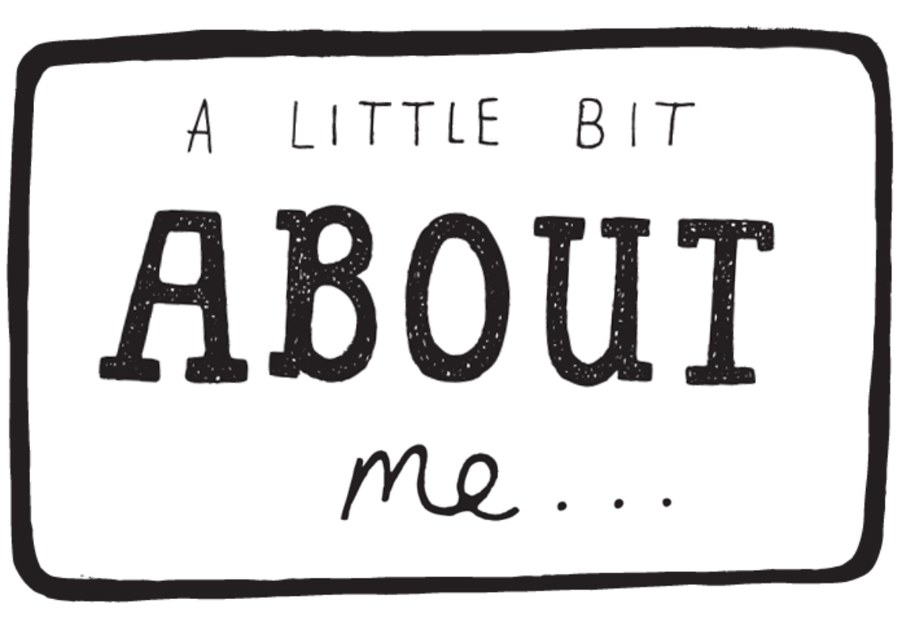
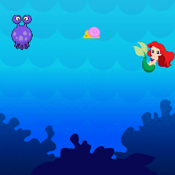
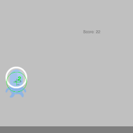
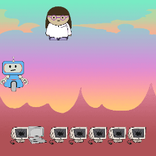
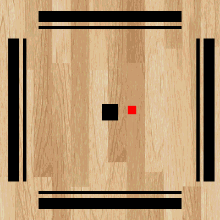

SARVIKA SHARMA
HEY WELCOME TO MY WEBSITE!!
FEEL FREE TO EXPLORE AND KNOW MORE ABOUT ME :)

Trex Runner Game
UNDERWATER-PONG GAME
The PING-PONG game was the first game I learnt to programme using js in code.org platform and the "UNDERWATER-PONG" is one of my own version of the ping-pong game. In this game there is a MERMAID who is the player and the OCTUPUS who is the enmy of the game. The MERMAID moves along with y axis of the player's mouse and the enemy continously moves up and down at a constant velocity matching to that of the ball (small fish) . The mermaid has to bounce of the fish to the octupus and if she loses it the small fish gets lost in the sea and the octupus vanishes in search to eat it :) .

BOTRUN !!
The BOTRUN game is inspired by the T-REX Running Game which was the 2nd Game I learnt to programme.You probably know this game because you often get to play this game on google chrome everytime there's "NO INTERNET" on your PC. But this game I programmed has a twist. I replaced the pixalated T-REX DINOSAUR with a RAD ROBOT who has to jump off icy cliffs and also protect itself from electronic birds flying in it's way.Also I did not forget to replace the clouds in the trex game with awesome flying drones in the background .

FIX THE COMPUTERS
This game is kind of special to me because programming this game gave me an opurtunity to take part as a panelist in the #CODEBREAK episode with HADI PARTOVI who is the founder and creator of code.org. In this game there is an engineer who is the player of the game.She moves along with the x axis of the player's mouse and she is on a mission to fix all the broken computers into new and fresh ones but unfortunately there is a HUNGRY ROBOT in her way who apparently eats the tools she droppes to fix the computers. This game was actually inspired by a CARROT STEW GAME(which was one of the weekly coding challenges) which revolves around the same concept . Will the engineer be able to fix the computers without wasting her tools ? Play this game to find out y:)

E-CARROM !!
Carrom has been one of my favourite games and when I learnt to code games I had to make an electronic CARROM GAME. This game does not have much animations it is a simple game with the striker and 1 coin . Use the left , right , up and down arrows to mmove the striker in order to kick out the coin making it touch the any of the 4 edges. Spin of your own version by adding cool animations :)
